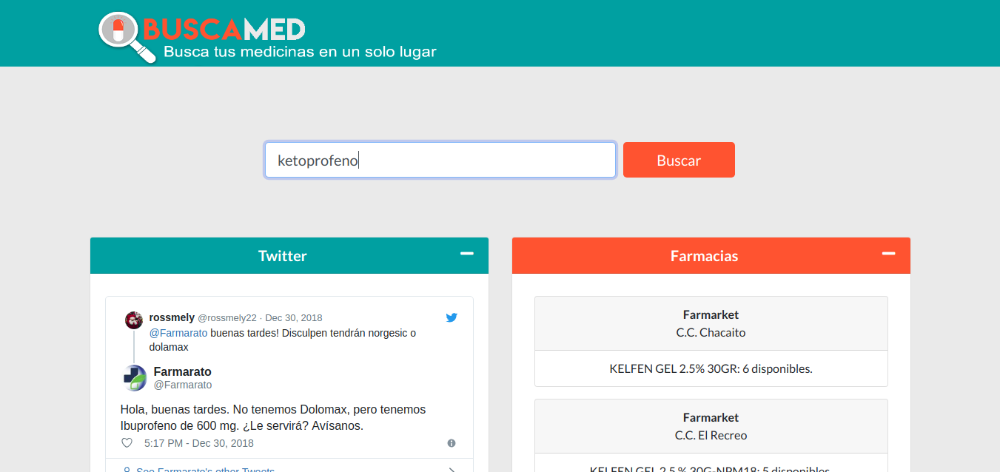

Módulo: stores-templates
En este módulo, se encuentran las vistas de la aplicación web, así como la vista pública de búsqueda. Estas vistas se encuentran dentro de la carpeta stores/templates y son archivos HTML con variables renderizadas por los constroladores de stores-views.
index.html
Autores
- Lautaro Villalón, 12-10427 | Yarima Luciani, 13-10770
Descripción
Página de acceso público donde se le permite al usuario realizar búsquedas de medicinas utilizando todos los servicios ofrecidos por el servidor REST.
Utiliza homeSearch.js para realizar las búsquedas.
Vista Previa:

login.html
Autores
- Lautaro Villalón, 12-10427 | Yarima Luciani, 13-10770
Descripción
Página de acceso publico donde se le permite al usuario iniciar sesión al sistema interno de farmacias adscritas. Se encuentra dentro de la carpeta templates/registration
Vista Previa:
readFile.html
Autores
- Lautaro Villalón, 12-10427 | Yarima Luciani, 13-10770
Descripción
Página de acceso restringido a usarios de farmacias donde se le permite al usuario cargar un archivo CSV con el inventario de medicinas.
El archivo CSV debe tener las siguientes columnas: activo | medicina | presentacion | disponibilidad.
Utiliza readFile.js para leer el archivo.